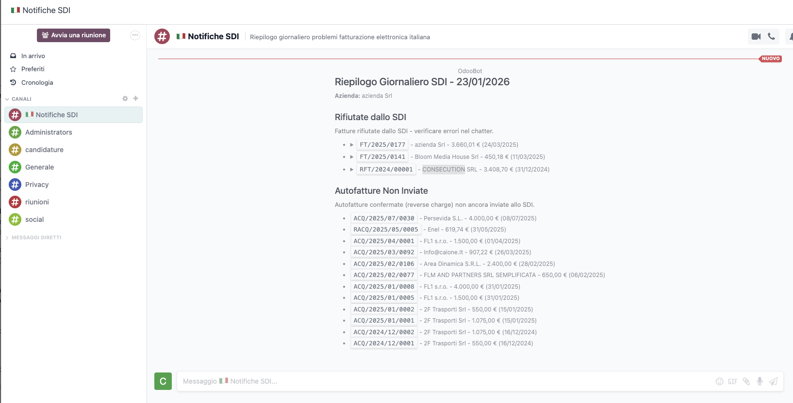
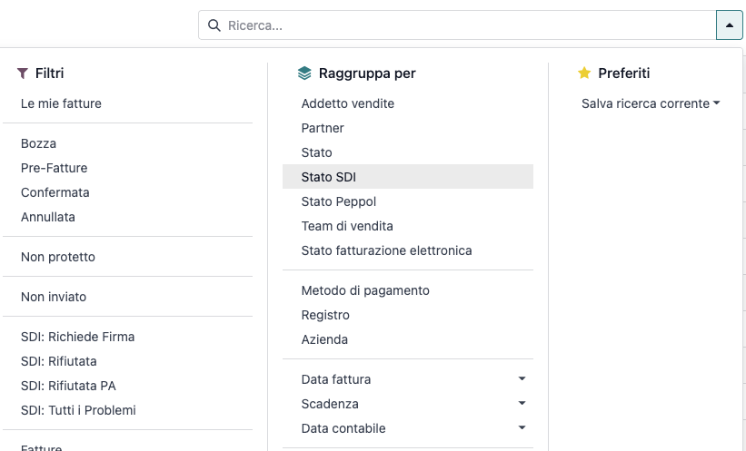
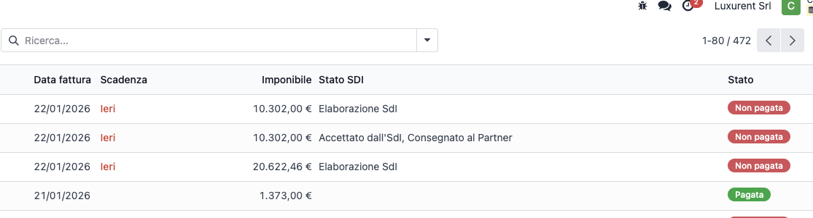
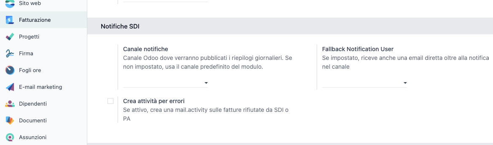

Every day, the module automatically posts a message in your configured Odoo Discuss channel with a summary of all problematic invoices, organized by error category.
Requires Signature
Invoices that require user signature before being sent to SDI.
Status: requires_user_signature
Rejected by SDI
Invoices rejected by the Italian Tax Authority interchange system.
Status: rejected
Rejected by PA Partner
Invoices to Public Administration rejected by the recipient.
Status: rejected_by_pa_partner
Self-Invoices Not Sent
Confirmed self-invoices (reverse charge) not yet transmitted to SDI.
Requires manual action

New SDI-specific filters: Requires Signature, Rejected, Rejected by PA, All Problems. Plus grouping by SDI State for easy organization.

The SDI State column is now visible by default in the invoice list, allowing you to immediately identify the transmission status of each document.

Notification Channel - Odoo Discuss channel where daily summaries will be posted. If not configured, uses the default channel created by the module.
Fallback Notification User - Optional user who also receives a direct email in addition to the channel notification.
Create Activity for Errors - If enabled, automatically creates a mail.activity on invoices with SDI problems, assigned to the responsible user.
Features
Requirements
Note: The module requires l10n_it_edi to be already installed and configured.
The cron job runs automatically every day at 06:00.
Version 18.0.2.1.0
For technical assistance, bug reports or feature requests:
Email: support@fl1.cz
Website: https://fl1.cz
Developed by FL1 sro - Odoo solutions specialists for the Italian market.